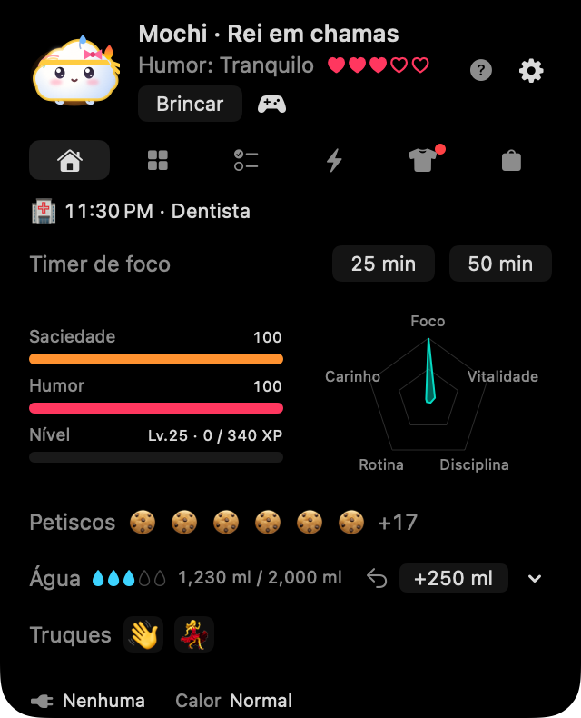
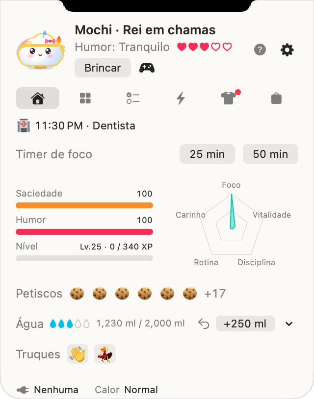
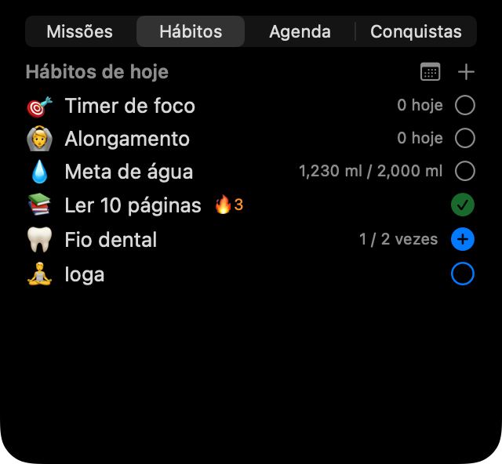

Toc, toc, é o Noki!
Um amiguinho fofo que mora ao lado do notch do seu MacBook. Enquanto você trabalha, ele lembra de beber água, se alongar, fazer pausas de verdade e cumprir os planos do dia. Cuide de você e ele sai do ovo e cresce junto.


Cinco amigos, todos grátis
☁️ Mongsil
um bebê nuvemO humor dele é o tempo: garoa quando está com fome, sol quando a meta de água do dia é cumprida.
🧶 Boksle
uma bolinha de peloDeita de barriga enquanto carrega; levanta as orelhas quando o ponteiro chega perto.
🍮 Tangtang
um pudimDerrete pingando caramelo quando o Mac esquenta; balança feliz enquanto carrega.
🌱 Kongkong
um feijão brotandoBrilha quando a meta de água é cumprida; a folha murcha quando fica com sono.
🌙 Mallo
um marshmallow coelho da luaDepois das 21h, a lua crescente na testa dele brilha.
Amigos sazonais
Com o Noki Plus você conhece um amigo especial a cada estação, e ele fica com você depois da estação e depois do Plus: Eunhaeng (um mochi de ginkgo) e Danpung (uma folha de bordo) no outono, Noonsongi (uma bola de neve fofinha) e Hoppang (um pãozinho no vapor de cachecol) no inverno.


Ele respira com o seu Mac
O Noki reage à bateria, à carga, ao calor, à atividade do teclado e do mouse e ao repouso da tela, tudo lido no seu Mac. O rosto dele mostra treze sentimentos e, se você ativar, ele usa guarda-chuva ou cachecol conforme o tempo lá fora.
Cuida do seu dia
💧 Água e alongamento
Registre um copo com um clique, salve seus próprios copos e adicione o que bebeu longe do Mac. Lembretes gentis para se alongar depois de muito tempo sentado e timers de 25 ou 50 minutos.
🌱 Hábitos e planos
Seus hábitos por vezes ou por tempo, um calendário mensal de hábitos, planos simples com lembretes e, se você conectar, o Calendário do Mac.
🏆 Missões e conquistas
Três missões por dia, 35 conquistas e desafios semanais e mensais, com petiscos para comprar roupinhas.
🎾 Brincar
Faça carinho, jogue a bolinha na tela, jogue três minijogos ou duele com um amigo trocando códigos.



Leve, e só no seu Mac
A respiração dele não redesenha nada, então em repouso usa quase 0% de CPU e descansa quando a tela dorme. Seu pet e seus registros ficam no seu Mac: sem conta e sem servidor. Veja a política de privacidade.
Em breve
O Mochi Noki está sendo lapidado com amigos. Vamos avisar aqui e em Novidades quando ele chegar à Mac App Store.
- Mac com Apple silicon (M1 ou posterior), macOS 14 Sonoma ou posterior
- Em um Mac sem notch ou em um monitor externo, aparece um notch virtual no topo, no centro. Você também pode trocar por um ícone na barra de menus.
- Os cinco amigos e os recursos principais são grátis. O Noki Plus (opcional) traz hábitos ilimitados, a carta mensal do Noki e os amigos sazonais.

Passe um dia com o Noki
e conte qual amigo você mais gosta 💌
Todas as imagens são desenhadas pelo próprio código de desenho do app.